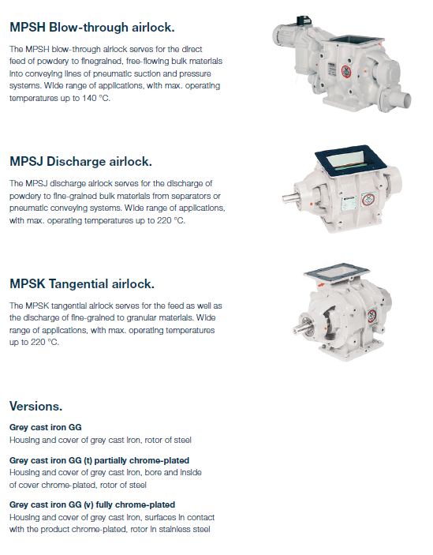
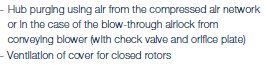

In flow control applications, orifice plates are used as restriction devices to regulate fluid flow or reduce the flowing pressure downstream of the orifice plate. The use of a fixed restriction orifice can be beneficial and economic by reducing the demands on other flow system components.
The small hole on orifice plates restricts flow which causes the pressure to drop. The pressure can be measured using pressure gauges before and after the orifice plates whichallows you to determine the flow rate using the Bernoulli’s Equation.
An orifice plate is a device used for measuring flow rate, for reducing pressure or for restricting flow (in the latter two cases it is often called a restriction plate). Either a volumetric or mass flow rate may be determined, depending on the calculation associated with the orifice plate. It uses the same principle as a Venturi nozzle, namely Bernoulli's principle which states that there is a relationship between the pressure of the fluid and the velocity of the fluid. When the velocity increases, the pressure decreases and vice versa.
https://en.wikipedia.org/wiki/Orifice_plate